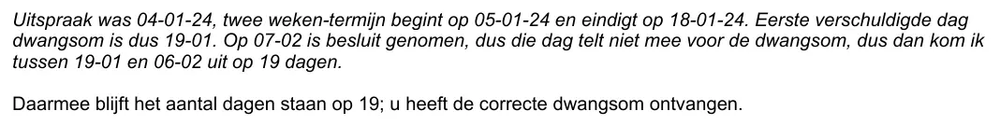

Exhibit · Email
National Ombudsman to Giltay, 28 February 2024
The passage
“The judgment was 04-01-24, the two-week period begins on 05-01-24 and ends on 18-01-24. The first day on which the penalty payment is due is therefore 19-01. On 07-02 a decision was taken, so that day does not count towards the penalty payment, so between 19-01 and 06-02 I arrive at 19 days. That leaves the number of days at 19; you have received the correct penalty payment.” Page 1, the calculation set out in the email of 28 February 2024. Translated from the Dutch; the original wording is below.
Original wording
“Uitspraak was 04-01-24, twee weken-termijn begint op 05-01-24 en eindigt op 18-01-24. Eerste verschuldigde dag dwangsom is dus 19-01. Op 07-02 is besluit genomen, dus die dag telt niet mee voor de dwangsom, dus dan kom ik tussen 19-01 en 06-02 uit op 19 dagen. Daarmee blijft het aantal dagen staan op 19; u heeft de correcte dwangsom ontvangen.” The dates in the original are written in the Dutch day-month-year order, so 04-01-24 is 4 January 2024. The two paragraphs of the email are run together here.

Why this document matters
The District Court of The Hague had ruled that the National Ombudsman had wrongfully blocked Giltay’s information request, and in a subsequent ruling imposed penalty payments. With this email the institution replied when Giltay questioned the amount it had paid. A staff member had checked the sum, the count stayed at nineteen days, and Giltay was told he had received the correct penalty payment. The Ombudsman maintained that position until 11 June 2026, when it acknowledged the calculation error.
Provenance
- Document
- Email, printed from Gmail
- From
- Legal Affairs, National Ombudsman, signed Karin Vaalburg, senior legal adviser
- To
- Edwin Giltay
- Date
- 28 February 2024, 13:39
- Subject
- ‘Re: Betaling griffie- en proceskosten zaaknummer SGR 23 / 6997 WOO’
- Case number
- SGR 23 / 6997 WOO
- References
- Earlier email in the same thread, 21 February 2024, 18:22; the Ombudsman later acknowledged the calculation error, email of 11 June 2026
- Language
- Dutch
- See also
- District Court of The Hague, judgment of 18 July 2023 (ECLI:NL:RBDHA:2023:17841)District Court of The Hague, judgment of 27 December 2023 (ECLI:NL:RBDHA:2023:20409)ING bank statement, penalty payment by the National Ombudsman, 16 February 2024
Cited in: the essay ‘The Ban Fell, the Book Stood’ in the chapter (9) ‘Preserved Forever’.
Exhibit page: https://
Document: https://
Last modified 3 August 2026, accessed 3 October 2026.

This page is an exhibit to the book The Cover-up General by Edwin Giltay and its accompanying website.